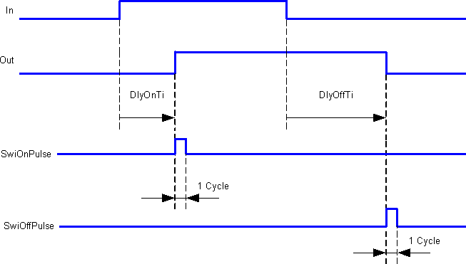
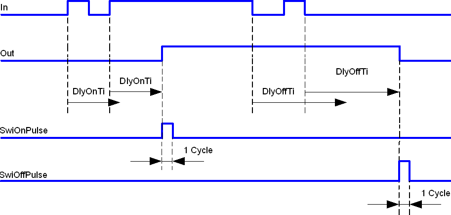
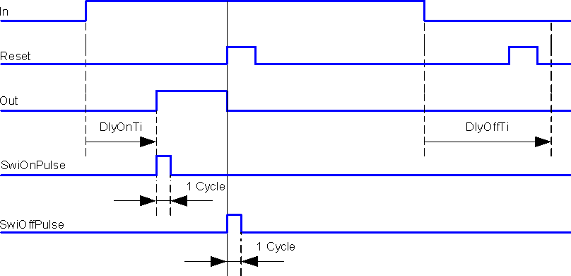
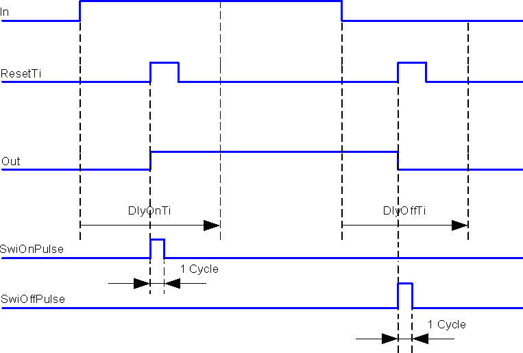

[SWI_DLY] 开启延迟、关闭延迟
功能块 SWI_DLY 处理输入信号。
SWI_DLY processes the input signal. The following options exist:
- Delay switch-on or switch-off.
- Cancel switch-on signal.
- Cancel delay times.
- Generate switch-on pulse or switch-off pulse.
Functioning
Delay switch-on or switch-off.

Minimum pulse length to switch on and off

Cancel switch-on signal.

Cancel delay times.

Pins
输入 | 描述 | 数据类型 | 默认值 |
|---|---|---|---|
In | Input | 布尔值 | 0 |
DlyOn | Switch-on delay 发送阶段请求后，直到阶段真正切换的等待时间。 | 时间 | 0 ms |
DlyOff | Switch-off delay 发送阶段请求重置后，直到阶段实际关闭的等待时间。 | 时间 | 0 ms |
Reset | Reset | 布尔值 | 0 |
0 - 不重置 | |||
ResetTi | Reset times 输入脉冲将所有内部运行时间计数器重置为 0。外部运行时间计数器不受影响。 | 布尔值 | 0 |
0 - No | |||
输出 | 描述 | 数据类型 | 默认值 |
|---|---|---|---|
Out | Output | 布尔值 | 0 |
PlsSwiOn | Switch-on pulse | 布尔值 | 0 |
0 - No | |||
PlsSwiOff | Switch-off pulse | 布尔值 | 0 |
0 - No | |||
TiEld | Elapsed time 截止日期尚未确定。达到[Ti]后，[TiEld]重置为0。 | 时间 | 0 ms |
Process response
- If for Start [In] = 1 then [DlyOnTi] starts.
After expiration of [DlyOnTi], [Out] = 1 and [SwiOnPulse] is triggered. - For Start [In] = 0 then [Out] remains = 0.
[DlyOffTi] is not started and [SwiOffPulse] is not triggered.